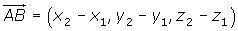
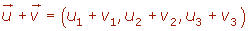
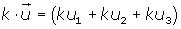
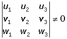
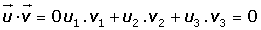

Vector Basic Formulas 1
Components

Magnitude or Lenght


Distance between two points

Unit Vector

Vector Addition


Scalar Multiplication

Linearly Dependent Vectors


Linearly Independent Vectors

Dot Product

Magnitude of a Vector

Angle Between Two Vectors

Orthogonal Vectors
